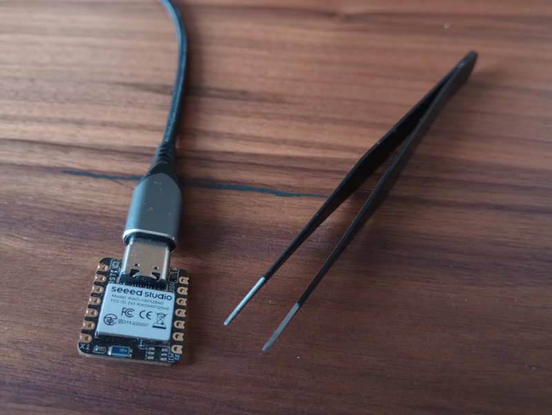
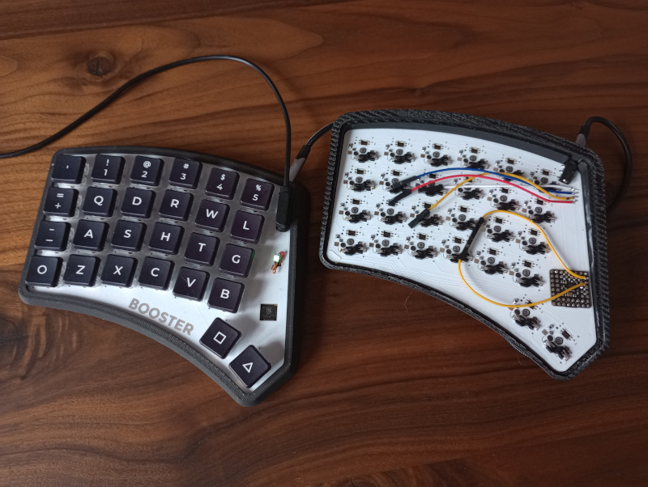
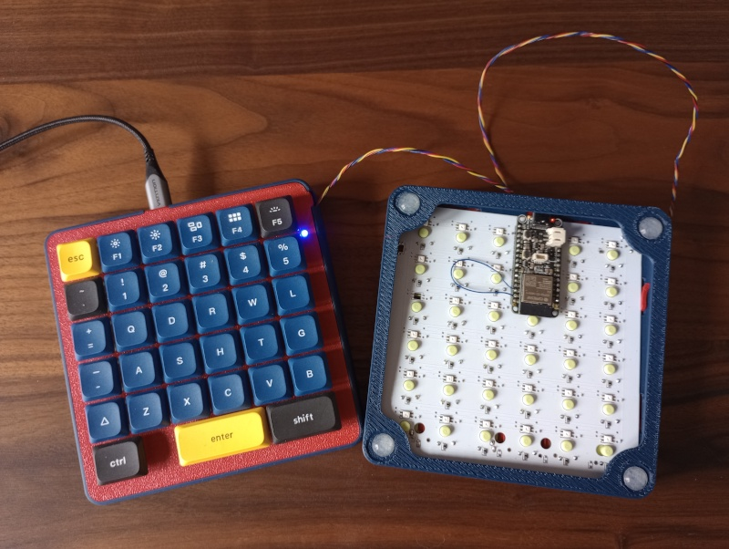

3.1 Hardware Keypass

This simple setup uses an unmodified Seeed Xiao nRF52840 connected to a computer via USB.
To make it more useful and entertaining, we simulate the behavior of a hardware security key.
⚠️ Warning: This is not intended for real security purposes. Actual hardware keys use encryption and have more advanced mechanisms.
By bridging pin D5 (sending pin) and pin D6 (receiving pin) with pliers or any other conductive object like a wire, paper clip, etc. predefined key string is sent to the computer.
This setup uses only one hardware component, which acts as both the signal sender and the central processing unit.
For this reason PeripheryCentral is defined and added to the keyboard object. Each peripheral device also requires an interface, here InterphaceCentral is added to fulfill that role.
Standard keyboard keys were used, modifier key M_LSFT was applied to produce capital letters and special characters.
All input is grouped under a single key called HK, defined as a sequence SEQ key.
The keymap is simple and consists of only one key: HK.
The nRF52840 supports Bluetooth Low Energy (BLE).
To connect the keyboard via Bluetooth, uncomment the line keyboard.use_ble(True).
In some cases, the BLE connection can be unreliable and keystrokes may not be transmitted correctly.
If this happens, try turning Bluetooth off and on again and then reconnecting the device—for example, by re-pairing it on your phone.
import board
from mkx.mkx_central import MKX_Central
from mkx.keys_standard import *
from mkx.keys_modifiers import M_LSFT
from mkx.keys_sequence import SEQ
from mkx.periphery_central import PeripheryCentral
from mkx.interphace_central import InterphaceCentral
keyboard = MKX_Central()
col_pins = (board.D5,)
row_pins = (board.D6,)
hardware_keypass_peryphery = PeripheryCentral("hardware_keypass", col_pins, row_pins)
keyboard.add_central_periphery(hardware_keypass_peryphery)
interphace_central = InterphaceCentral(hardware_keypass_peryphery, 0, 0, 0, 0)
keyboard.add_interface(interphace_central)
HK = SEQ([M_LSFT(H), E, L, L, O, SPACE,
M_LSFT(W), O, R, L, D, SPACE,
M_LSFT(M), M_LSFT(K), M_LSFT(X), M_LSFT(N1), ENTER])
keymap = [
[
HK,
],
]
keyboard.add_keymap(keymap, 1, 1)
keyboard.run_forever()
3.2 Booster Keyboard

Here is a more practical example using a split keyboard called Booster.
Both halves of the keyboard use the Pimoroni PGA2040 board, chosen for its small footprint, numerous available GPIO pins, and minimal onboard extras.
In the image, you can see:
- hot swap choc keys sockets
- development wiring on the right half, connecting it to USB for programming.
- loop between the sending and receiving pins used for debugging the UART connection.
- USB magnetic connector soldered to the left half, intended for regular usage.
- status RGB LED glowing green, indicating the currently active layer.
The keyboard runs slightly modified Workman layout and supports various types of keys, including media keys.
In terms of architecture:
- The left half functions as the PeripheryCentral
- The right half functions as the PeripheryUART
These peripheries are designed solely to send signals to the central processor using a defined protocol.
The left half also contains the Interphaces for both sides, managing communication between the central unit and each periphery.
The status LED indicates the active layer:
- Green for Layer 1
- Blue for Layer 2
Additionally, a few shortcut keys are defined, which are referenced later in the keymap.
Left Keyboard Part (Central)
import board
from mkx.mkx_central import MKX_Central
from mkx.periphery_central import PeripheryCentral
from mkx.interphace_central import InterphaceCentral
from mkx.interphace_uart import InterphaceUART
from mkx.layer_status_led_rgb_neopixel import LayerStatusLedRgbNeoPixel
from mkx.keys_standard import *
from mkx.keys_modifiers import M_LGUI
from mkx.keys_holdtap import HT
from mkx.keys_layers import MO, TO
from mkx.keys_media import VOLU, VOLD
keyboard = MKX_Central()
col_pins = (board.GP9, board.GP7, board.GP5, board.GP4, board.GP3, board.GP2)
row_pins = (board.GP10, board.GP11, board.GP13, board.GP15, board.GP17)
central_peryphery = PeripheryCentral("booster_l", col_pins, row_pins)
keyboard.add_central_periphery(central_peryphery)
interphace_central = InterphaceCentral(central_peryphery, 0, 0, 5, 4)
keyboard.add_interface(interphace_central)
interphace_right = InterphaceUART("booster_r", None, board.GP1, 11, 0, 6, 4)
keyboard.add_interface(interphace_right)
status_led = LayerStatusLedRgbNeoPixel(board.GP23, brightness=0.015)
status_led.add_layer(0, (0, 255, 0))
status_led.add_layer(1, (0, 0, 255))
keyboard.add_layer_status_led(status_led)
DESKTOP = M_LGUI(D)
LOCK = M_LGUI(L)
LAY1 = HT(TO(1), MO(1))
LAY0 = HT(TO(0), MO(0))
LCTL_TAB = HT(TAB, LCTRL)
LSFT_SPC = HT(SPC, LSFT)
RALT_BSPC = HT(BSPC, RALT)
LALT_BSPC = HT(BSPC, LALT)
keymap = [
[
GRV, N1, N2, N3, N4, N5, N6, N7, N8, N9, N0, BSLS,
EQL, Q, D, R, W, L, J, F, U, P, SCLN, LBRC,
MINS, A, S, H, T, G, Y, N, E, O, I, QUOT,
LCTL_TAB, Z, X, C, V, B, K, M, COMM, DOT, SLSH, RBRC,
None, None, None, None, LSFT_SPC, ENTER, LAY1, RALT_BSPC, None, None, None, None,
],
[
ESC, F1, F2, F3, F4, F5, F6, F7, F8, F9, F10, F11,
None, None, DESKTOP, PAGE_UP, None, LOCK, None, BSPC, UP, DEL, None, F12,
None, None, HOME, PAGE_DOWN, END, None, None, LEFT, DOWN, RIGHT, None, None,
LCTL_TAB, Z, X, C, V, None, None, VOLD, None, VOLU, None, None,
None, None, None, None, LSFT_SPC, ENTER, LAY0, LALT_BSPC, None, None, None, None,
]
]
keyboard.add_keymap(keymap, 12, 5)
keyboard.run_forever()
Right Keyboard Part
import board
from mkx.mkx_periphery import MKX_Periphery
from mkx.periphery_uart import PeripheryUART
col_pins = (board.GP9, board.GP7, board.GP5, board.GP4, board.GP3, board.GP2)
row_pins = (board.GP10, board.GP11, board.GP13, board.GP15, board.GP17)
peryphery = PeripheryUART("booster_r", col_pins, row_pins, board.GP0, board.GP1)
keyboard = MKX_Periphery(peryphery, debug=True)
keyboard.run_forever()
3.3 Square Keyboard

Another split keyboard example, called Sq (Square), is equipped with Feather ESP32-S3 boards on both halves.
This board provides several advantages, including potential Bluetooth connectivity, battery support, and onboard charging capabilities.
Since many parts of the code are shared with the Booster keyboard, this overview will focus only on the key differences.
The left half, which connects to the computer, includes a new file: boot.py.
This script runs immediately when the board powers on, allowing configuration of USB device properties.
This includes:
- defining the keyboard's USB type and name
- disabling auto-reload on file save or system glitches, improving stability during everyday use
- preventing the board from appearing as a mass storage device, which is important for cybersecurity policies in some workplaces
To re-enable the storage device mode, a specific key (wired to source and sense pins) must be held down while powering on the board.
⚠️ Warning: Always back up your code before disabling the storage feature. Incorrect pin configuration or other errors can make the board unresponsive.
In such cases, a hard reset may be required, which erases all data and necessitates re-uploading your code.
Additional Features:
- RGB backlighting: the keyboard has a slowly glowing rainbow effect across its keys
- VIM emulation: the keyboard can simulate VIM editor behavior using a custom keys_vim configuration
Each keyboard layer corresponds to a different VIM mode, indicated by the status LED.
Even if you're not a VIM fan, you may find some picked vim_keys useful in your own keymap.
Theoretically, this behavior can work even in text input fields of a browser 😉
Left Keyboard Part (Central)
import board
from mkx.boot_config import boot_cfg
boot_cfg(
sense=board.D13,
source=board.D5,
autoreload=False,
storage=False,
usb_id=("MKX Device", "Sq Keyboard"),
)
import board
from mkx.mkx_central import MKX_Central
from mkx.layer_status_led_rgb_neopixel import LayerStatusLedRgbNeoPixel
from mkx.backlight_neopixel_rainbow import BacklightNeopixelRainbow
from mkx.keys_standard import *
from mkx.keys_modifiers import M_LCTL, M_LSFT, M_LGUI
from mkx.keys_media import VOLU, VOLD
from mkx.keys_holdtap import HT
from mkx.keys_layers import TO
from mkx.keys_vim import *
from mkx.periphery_central import PeripheryCentral
from mkx.interphace_central import InterphaceCentral
from mkx.interphace_uart import InterphaceUART
keyboard = MKX_Central()
col_pins = (board.D13, board.D12, board.D11, board.A1, board.A4, board.A3)
row_pins = (board.A2, board.MISO, board.D10, board.D9, board.D6, board.D5)
central_peryphery = PeripheryCentral("sq_l", col_pins, row_pins)
keyboard.add_central_periphery(central_peryphery)
interphace_central = InterphaceCentral(central_peryphery, 0, 0, 5, 5)
keyboard.add_interface(interphace_central)
interphace_right = InterphaceUART("sq_r", board.TX, board.RX, 6, 0, 11, 5)
keyboard.add_interface(interphace_right)
status_led = LayerStatusLedRgbNeoPixel(board.SCK)
status_led.add_layer(0, (0, 0, 255))
status_led.add_layer(1, (0, 255, 0))
status_led.add_layer(2, (255, 255, 255))
status_led.add_layer(3, (255, 0, 0))
keyboard.add_layer_status_led(status_led)
backlight = BacklightNeopixelRainbow(board.A0, num_pixels=72, brightness=0.4)
backlight.slower(2)
backlight.set_swirl(True)
keyboard.add_backlight(backlight)
OPEN = M_LCTL(O)
CLOSE = M_LCTL(W)
SAVE = M_LCTL(S)
TABS = M_LCTL(J)
TOOLS = M_LCTL(B)
DESKTOP = M_LGUI(D)
LOCK = M_LGUI(L)
PTAB = M_LCTL(PGUP)
NTAB = M_LCTL(PGDN)
COMMENT = M_LCTL(SLSH)
RALT_DEL = HT(DEL, RALT)
LALT_DEL = HT(DEL, LALT)
LSFT_SPC = HT(SPC, LSFT)
keymap = [
[
ESC, F1, F2, F3, F4, F5, F6, F7, F8, F9, F10, F11,
GRV, N1, N2, N3, N4, N5, N6, N7, N8, N9, N0, F12,
VI_MVLU, None, VI_DEL, VI_REPL.L(3), SAVE, LOCK, TABS, VI_FIND, VI_UNDO, VI_PAST, None, VOLU,
VI_MVLD, VI_APND.L(1), VI_SUBS.L(1), HOME, TOOLS, DESKTOP, VI_YANK, VI_NXTW, END, OPEN, VI_INS.L(1),VOLD,
TAB, None, VI_CUT, CLOSE, TO(2), VI_PRVW, None, None, PTAB, NTAB, COMMENT, None,
LCTRL, LCTRL, ENT, ENT, LSFT_SPC, LSFT_SPC, BSPC, LALT_DEL, LEFT, UP, DOWN, RIGHT,
],
[
TO(0), F1, F2, F3, F4, F5, F6, F7, F8, F9, F10, F11,
GRV, N1, N2, N3, N4, N5, N6, N7, N8, N9, N0, BSLS,
EQL, Q, D, R, W, L, J, F, U, P, SCLN, LBRC,
MINS, A, S, H, T, G, Y, N, E, O, I, QUOT,
TAB, Z, X, C, V, B, K, M, COMM, DOT, SLSH, RBRC,
LCTRL, LCTRL, ENT, ENT, LSFT_SPC, LSFT_SPC, BSPC, RALT_DEL, LEFT, UP, DOWN, RIGHT,
],
[
TO(0), F1, F2, F3, F4, F5, F6, F7, F8, F9, F10, F11,
GRV, N1, N2, N3, N4, N5, N6, N7, N8, N9, N0, F12,
M_LSFT(VI_NXTL), None, VI_DEL, VI_REPL.L(3), SAVE, LOCK, TABS, VI_FIND, VI_UNDO, VI_PAST, None, None,
M_LSFT(VI_PRVL), VI_APND.L(1), VI_SUBS.L(1), M_LSFT(HOME), TOOLS, DESKTOP, VI_YANK, M_LSFT(VI_NXTW),M_LSFT(END), OPEN, VI_INS.L(1), None,
TAB, None, VI_CUT, CLOSE, None, M_LSFT(VI_PRVW),None, None, PTAB, NTAB, COMMENT, None,
LCTRL, LCTRL, ENT, ENT, LSFT_SPC, LSFT_SPC, BSPC, LALT_DEL, M_LSFT(LEFT), M_LSFT(UP), M_LSFT(DOWN), M_LSFT(RIGHT),
],
[
VI_R_ESC.L(0), F1, F2, F3, F4, F5, F6, F7, F8, F9, F10, F11,
GRV, N1, N2, N3, N4, N5, N6, N7, N8, N9, N0, BSLS,
EQL, Q, D, R, W, L, J, F, U, P, SCLN, LBRC,
MINS, A, S, H, T, G, Y, N, E, O, I, QUOT,
TAB, Z, X, C, V, B, K, M, COMM, DOT, SLSH, RBRC,
LCTRL, LCTRL, ENT, ENT, LSFT_SPC, LSFT_SPC, BSPC, RALT_DEL, LEFT, UP, DOWN, RIGHT,
],
]
keyboard.add_keymap(keymap, 12, 6)
keyboard.run_forever()
Right Keyboard Part
import board
from mkx.mkx_periphery import MKX_Periphery
from mkx.periphery_uart import PeripheryUART
col_pins = (board.D13, board.D12, board.D11, board.A1, board.A4, board.A3)
row_pins = (board.A2, board.MISO, board.D10, board.D9, board.D6, board.D5)
peryphery = PeripheryUART("sq_r", col_pins, row_pins, board.TX, board.RX)
keyboard = MKX_Periphery(peryphery, debug=True)
keyboard.run_forever()